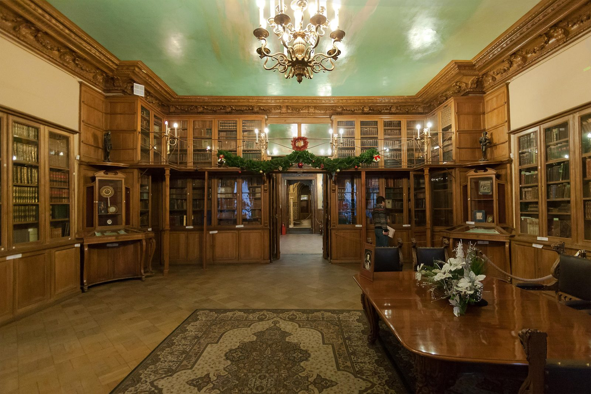

Юридическая точность,которой доверяют.
Удостоверение сделок, наследство, доверенности и корпоративные вопросы — ул. Казанская, 18, у Казанского собора. Нотариус Таракановский Леонид Феликсович.
Записаться на приёмСделки, которые
выдерживают проверку времени
Более 70 нотариальных действий: недвижимость, наследство, доверенности, семейные и корпоративные вопросы. Каждый документ нотариус проверяет лично и разъясняет его правовые последствия.
Десять направлений нотариальной практики
Более 70 нотариальных действий. Нажмите на категорию, чтобы увидеть полный список.
- Купля-продажа квартиры, дома, участка
- Продажа доли в квартире
- Дарение недвижимости
- Договор ренты и пожизненного содержания с иждивением
- Договор ипотеки доли в праве общей собственности
- Уведомление сособственника о продаже доли
- Соглашение об определении долей
- Соглашение о порядке пользования помещением
- Предварительный договор
- Электронная подача документов в Росреестр
- Удостоверение завещания
- Совместное завещание супругов
- Наследственный договор
- Открытие и ведение наследственного дела
- Свидетельство о праве на наследство
- Соглашение о разделе наследственного имущества
- Принятие мер по охране наследства
- Выезд к завещателю на дом или в больницу
- Брачный договор
- Соглашение о разделе совместно нажитого имущества
- Соглашение об уплате алиментов
- Оформление материнского капитала в долевую собственность
- Согласие супруга на сделку
- Согласие на выезд ребёнка за границу
- Согласие на регистрацию по месту жительства
- Генеральная доверенность
- На управление и распоряжение автомобилем
- На управление квартирой
- На представление интересов в суде
- На представление интересов несовершеннолетнего
- На получение пенсии и пособий
- На ведение наследственного дела
- На получение документов
- На распоряжение банковским счётом
- Машиночитаемая доверенность (МЧД)
- Отмена доверенности
- Купля-продажа доли в уставном капитале ООО
- Дарение доли в уставном капитале
- Залог доли
- Удостоверение решения единственного участника
- Удостоверение протокола общего собрания участников
- Акцепт безотзывной оферты о продаже доли
- Опционный договор и соглашение о предоставлении опциона
- Договор конвертируемого займа
- Заявление о выходе участника из ООО
- Договор инвестиционного товарищества
- Соглашение об управлении хозяйственным партнёрством
- Свидетельствование подлинности подписи
- Свидетельствование верности копий документов и выписок
- Свидетельствование верности перевода
- Удостоверение времени предъявления документа
- Удостоверение равнозначности электронного и бумажного документа
- Удостоверение факта нахождения гражданина в живых
- Обеспечение доказательств в интернете (осмотр сайта)
- Нотариальный депозит по сделке с недвижимостью
- Депозит при банкротстве
- Регистрация уведомления о залоге движимого имущества
- Выписка из реестра уведомлений о залоге
- Исполнительная надпись
- Протест векселя
- Передача заявлений и документов почтой и по каналам связи
- Свидетельство о передаче заявления
- Принятие на хранение документов
- Обеспечение доказательств
- Дистанционная сделка с участием двух нотариусов
- Электронная подача документов в Росреестр и ФНС
- Удостоверение равнозначности документов
- Выписки из ЕГРН и ЕГРЮЛ через нотариуса
- Машиночитаемые доверенности
- Правовая консультация по нотариальному действию
- Выезд нотариуса на дом, в больницу, в офис
- Корпоративное обслуживание организаций
- Составление проектов договоров и заявлений
- Помощь в подборе формы сделки

Более 30 лет нотариальной практики
Таракановский Леонид Феликсович — нотариус Санкт-Петербургского нотариального округа, осуществляет нотариальную деятельность с 1994 года. Реестровый номер 78/260-н/78, лицензия №268, приказ №273-к от 14.07.1994.
Контора находится по адресу ул. Казанская, 18 — Адмиралтейский район, у Казанского собора. Нотариус и сотрудники конторы разъясняют правовые последствия каждого действия, проверяют документы и помогают выбрать форму сделки, которая защитит ваши интересы.
Нотариус удостоверяет сделки, доверенности и завещания, ведёт наследственные дела, свидетельствует подлинность подписей и верность копий, подаёт документы в Росреестр и ФНС в электронном виде.
«Нотариальный акт — это защита ваших прав сегодня и уверенность в завтрашнем дне».
Как проходит нотариальное действие
Понятный процесс в пять шагов — от звонка до готового документа.
Позвоните или оставьте заявку на сайте. Уточните услугу и удобное время.
Подготовьте документы по списку, который сообщат при записи. Оригиналы обязательны.
Нотариус разъяснит правовые последствия, проверит документы и личности сторон.
Подписание документа в присутствии нотариуса и совершение удостоверительной надписи.
Вы получаете готовый документ. При необходимости — электронная подача в Росреестр.
Что говорят клиенты
Оформляли куплю-продажу квартиры. Нотариус подробно объяснил каждый пункт договора, документы в Росреестр ушли электронно — регистрация прошла за несколько дней.
Делали согласие на выезд ребёнка за границу. Приняли по записи вовремя, всё оформили за двадцать минут, без лишних вопросов.
Открывали наследственное дело. Леонид Феликсович внимательно разобрал ситуацию с долями и подсказал, как лучше поступить. Чувствуется многолетний опыт.
Удобное расположение у Казанского собора, есть оплата картой. В пятницу вечером была очередь — лучше записываться заранее.
Демонстрационное наполнение: тексты отзывов — примеры оформления. Реальные отзывы — на 2ГИС и Яндекс.Картах.
Частые вопросы
Если не нашли ответ — позвоните +7 (812) 315-25-23, подскажем.
Рекомендуем записаться заранее по телефону +7 (812) 315-25-23 или через форму на сайте — так вы не будете ждать в очереди. Часы приёма: 09:00–19:00 в будни, 09:00–18:00 в субботу.
Всегда — паспорт каждого участника. Остальное зависит от действия: для сделки с недвижимостью — правоустанавливающие документы, для доверенности — данные представителя, для наследства — свидетельство о смерти и документы о родстве. Точный список сообщат при записи.
Наличные и банковские карты.
Да, в субботу приём 09:00–18:00. Воскресенье — выходной. Приём документов до 18:30 (сб до 17:30), по предварительной записи.
Да, выезд нотариуса возможен — на дом, в больницу, в офис организации. Время и условия выезда согласуются по телефону +7 (812) 315-25-23.
Да. После удостоверения сделки нотариус направляет документы в Росреестр в электронном виде — без визита в МФЦ и с сокращённым сроком регистрации.
Стоимость складывается из нотариального тарифа, установленного законом, и платы за услуги правового и технического характера, единой для всех нотариусов Санкт-Петербурга. Точную сумму по вашему действию сообщат при записи.
Адрес: ул. Казанская, 18, Адмиралтейский район, у Казанского собора. Метро: Невский проспект / Гостиный двор — 5 минут пешком.
Нотариальное действие совершается на русском языке. Если участник не владеет русским, потребуется переводчик — его участие и данные указываются в документе. Договоритесь об этом заранее при записи.
Нет. Для доверенности достаточно присутствия доверителя с паспортом; о представителе нужны паспортные данные. Представитель получает доверенность позже — лично или через доверителя.
Материалы нотариальной конторы
Тарифы, списки документов для сделок, разъяснения нотариуса и полезная информация — собраны в одном окне.
Как нас найти
Адмиралтейский район, у Казанского собора
Приём документов до 18:30 (сб до 17:30), по предварительной записи
Записаться на приём
Заполните форму — откроется ваш почтовый клиент с готовым письмом. Или позвоните +7 (812) 315-25-23.